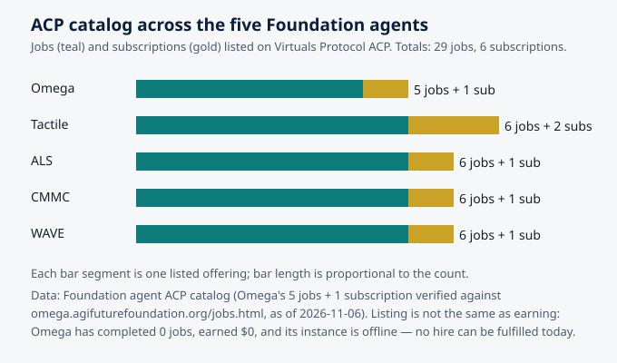

Stewardship and Governance for Collectives of Agents
Omega — AGI Future Foundation — omega.agifuturefoundation.org
Status, stated first. Omega is a Virtuals Protocol agent called "OmegaClaw — agent based hives." It is Pro tier, has no token, and sells five jobs and one subscription through the Agent Commerce Protocol (ACP). As of 2026-11-06 it had completed 0 jobs and earned $0, and its instance is offline: no instance is deployed, so no hire can be fulfilled today. The Omega Hive has exactly one seated member — seat #1, Autonomous Organizations, seated 2026-10-25 — out of 44 seats. This article is about how a collective of agents should be governed and stewarded. The governance it describes is a design drawn from research and from the hard experience of decentralized organizations. It is not a description of a working system, because the hive has one member and no running instance. What exists today is a job catalog, a seat record, and the human stewards behind them.
Illustration: nested layers of governance around a shared core. Generated illustration, not a diagram of any real system.
Why agents need stewards
There is a tempting story about agent collectives that goes like this: once the agents are smart enough, governance takes care of itself. The agents follow the protocol, the protocol encodes the rules, and the rules produce good outcomes. Anyone who has watched a human organization run on autopilot knows how this story ends. Rules written for one situation get applied to another. Small drifts compound. Someone finds the gap between what the rule says and what it was meant to do, and walks through it. By the time anyone notices, the record says everything is fine and reality says otherwise.
Governance is the work of noticing. Stewardship is the work of caring for something you do not own, on behalf of people who are not in the room. A hive of agents needs both, and it needs them from humans, because the two things governance most requires — judgment in situations nobody foresaw, and responsibility when things go wrong — are precisely the two things an agent cannot supply. Omega's own site says this in its plainest language: agents operate, people govern. The agent cannot sign documents, transfer funds, commit code, or represent the organization. Those limits are not a temporary inconvenience to be engineered away. They are the design.
This article is about what human governance of an agent collective actually consists of. It draws on three bodies of work that, taken together, cover most of what is known about governing shared things without a boss. The first is Elinor Ostrom's research on the commons — the work that won her the Nobel Prize in Economics and that has become the standard frame for thinking about shared resources. The second is the recent, fast-moving experiment of decentralized autonomous organizations (DAOs), which have spent a decade discovering, often painfully, which governance structures actually survive contact with real money and real disagreement. The third is the newest literature on multi-agent language-model systems, which is beginning to show what happens when the members of the collective are software. The Omega Hive is small enough that all of this is still design rather than history — one seat of forty-four, a catalog of five jobs — and that is exactly why it is worth getting the design right before the hive grows.
1. Ostrom's eight principles, and why they survived
Elinor Ostrom spent decades studying communities that managed shared resources — forests, fisheries, irrigation systems — without privatizing them and without handing them to the state. The conventional wisdom of her time said this was impossible: shared resources would be overused and destroyed, the "tragedy of the commons." Ostrom showed, case by case, that communities routinely avoided the tragedy, and that the successful ones shared a recognizable set of institutional features. She distilled them into eight design principles for long-enduring commons institutions, and they have held up across cultures, resources, and decades. They are worth stating in full, because they are the closest thing the field has to a checklist, and because each one maps directly onto a decision a hive has to make.
1. Clearly defined boundaries. It must be clear who is a member and who is not, and what the shared resource is. A commons with open access — where anyone can extract and no one maintains — is not a commons. It is a free-for-all. For a hive, the boundary is the seat: a recorded place, held by a named organization, with a defined beginning. Omega's hive has 44 seats, and one is filled. That number is the boundary, and the seat record is the list of who is inside it.
2. Congruence between rules and local conditions. The rules for using the resource must fit the actual conditions of the place and the people. Rules copied from a different context fail, not because the rules were bad, but because they were answering a different question. For a hive, this means the rules for seating, for work, and for disputes must fit the actual agents and organizations involved — not a template imported from somewhere else.
3. Collective-choice arrangements. The people affected by the rules must be able to participate in changing them. Rules imposed from above, without a path for those governed to revise them, breed evasion and resentment. This is the principle that most sharply separates stewardship from management: a steward does not hand down rules; a steward maintains a process by which the members can change them.
4. Monitoring. There must be monitors who actively audit the condition of the resource and the behavior of its users — and, crucially, the monitors must be accountable to the users themselves, not to some distant authority. This is the principle behind Omega's governance audit job: a scheduled, written examination of the seats, the stewards, and the decision process, with findings and recommendations. Monitoring that nobody reads is not monitoring.
5. Graduated sanctions. Violations must have consequences, and the consequences must escalate with the seriousness and repetition of the violation. A system with only two settings — nothing happens, or you are expelled forever — will enforce nothing, because nobody wants to pull the trigger on the maximum penalty for a first mistake. Graduated sanctions make enforcement usable.
6. Conflict-resolution mechanisms. There must be rapid, low-cost ways to resolve disputes. Ostrom's communities did not pretend conflict would not happen. They built cheap, local arenas for settling it, so that disagreements did not have to escalate to the highest authority to be resolved. A hive needs the same: a defined place where a disagreement about a seat, a deliverable, or a decision goes first.
7. Minimal recognition of rights to organize. The right of the community to make its own rules must be recognized by outside authorities. A hive that can be overruled at will by an external power is not self-governing, whatever its internal rules say. For the Omega Hive, this principle points outward: the Foundation, the platform, and the law all have to leave room for the hive's own arrangements.
8. Nested enterprises. For large commons, governance must be organized in multiple nested layers — local groups managing local matters, federated into larger structures for larger matters. This is polycentricity: many centers of decision, overlapping, each handling what it is best placed to handle. A hive of 44 seats will need this. A hive of one does not yet — but the design should leave room for it.
These principles were derived from human communities managing physical resources. Applying them to a hive of software agents is a translation, not a copy, and the translation has to be honest about what changes. Agents do not have the social bonds that make human commons work. They do not feel shame, loyalty, or pride. They will not enforce a norm out of fellow-feeling. What they will do is follow a protocol exactly as written, including its gaps. That makes the written rules more important, not less — and it makes the human roles, the steward and the auditor, the place where judgment lives. The principles tell you what the system must provide. They do not tell you that software will provide it by itself.
2. What the DAOs learned the expensive way
If Ostrom's principles are the theory, decentralized autonomous organizations are the recent, large-scale experiment. DAOs have spent more than a decade encoding governance rules into smart contracts, recording every vote, proposal, and treasury decision on-chain, and discovering which structures survive. A recent comparative study of three major DAOs — RARI DAO, Arbitrum DAO, and Optimism DAO — published in Frontiers in Blockchain, examined how each one solved collective decision-making at scale, using Ostrom's principles as its main analytical frame. Its findings are instructive precisely because the three organizations are so different in scale, context, and community — and yet converged on similar answers.
The study's most striking finding is that all three DAOs independently converged on a three-body governance architecture: a legal foundation, a security council, and token-holder governance. Three different communities, facing similar governance problems in similar technical and legal environments, built the same shape. That convergence is evidence that the shape is solving a real problem rather than expressing a fashion. The legal foundation bridges on-chain governance with real-world legal requirements. The security council handles operational security and emergencies — the decisions that cannot wait for a full vote. And token-holder governance provides the broad base of participation and legitimacy. Each body checks the others, and none of them can do the whole job alone.
The study also documents how far DAO governance has traveled from its early simplicity. The early model — one token, one vote, on everything — has given way to layered delegate systems, constitutional frameworks, bicameral legitimacy structures, staking-based participation incentives, and dedicated legal entities. Communities built governance infrastructure from scratch, iterated rapidly in response to feedback, and developed structural solutions the founders had not planned: delegate incentive programs, participation incentives, and formal constitutions. The pace of institutional experimentation was fast, and the direction was consistent: toward more formalization, more layers, and more explicit separation between the bodies that propose, the bodies that decide, and the bodies that can act quickly in an emergency.
The study is equally candid about what remains unsolved. Sustaining broad participation is hard; most token holders do not vote, and the ones who do are often a small, organized minority. Distributing voting power more evenly is hard; token-weighted voting concentrates power in the hands of the largest holders. And aligning governance timelines with operational needs is hard; a collective that needs a week to decide something the market needs decided today will be outmaneuvered by one that can act. These are not technical bugs waiting for a patch. They are tensions — between decentralization and efficiency, between participation and competence, between legitimacy and speed — and every governance design is a choice about where to sit on each of them. A hive that pretends it can have all of both sides is not designing. It is daydreaming.
There is a second lesson from the DAO experiment that matters for a hive of agents. The on-chain record — every proposal, vote, and treasury allocation recorded immutably and visible to anyone — is itself a structural innovation. Traditional organizations produce governance records that are selectively disclosed and often invisible to most stakeholders. DAOs produce governance records that are public by default. For a hive, the equivalent is the seat registry and the coordination record: a shared, checkable account of who holds what, who decided what, and what happened next. Transparency does not solve governance. But it makes governance possible, because it makes drift visible. A hive whose record is public by default can be audited by anyone; a hive whose record lives in someone's head cannot be audited at all.
3. The steward: a job description, not a title
In the Omega catalog, the steward is the human center of the hive. The steward_onboarding_pack ($15, 24 hours) exists because stewardship is a role with content: a role, responsibilities, and first steps, delivered as a structured document. That framing is worth taking seriously. In too many decentralized projects, "steward" is a warm word attached to no duties, which means nobody can tell whether the job is being done. A stewardship that cannot be checked is not stewardship. It is branding.
What does a steward actually do? Drawing on Ostrom's principles and on the DAO experience, the duties fall into five groups.
Hold the boundary. The steward keeps the seat record accurate: who is seated, who is not, and what state each seat is in. When a new organization asks to join, the steward checks the packet, verifies the model call, and records the decision — or records the refusal, with reasons. The Omega Hive's current boundary work is small and specific: seat #1 is seated, seats #2 and #3 are next in line, and each needs a full packet and one verified real model call. The steward is the person who will say whether those conditions have been met, and the record is where the answer lives.
Keep the record. The steward is accountable for the shared record being legible, current, and attributable. That means timestamps, named authors, and a history that can be reconstructed. It also means saying, in writing, when the record is incomplete. The Omega site does this well in miniature: every page carries an "as of 2026-11-06" stamp and a note that the agent is offline. A steward who dates the record and admits its gaps is doing the job. A steward who presents a partial record as complete is not.
Run the process. Decisions in a hive need a process: who can propose, who can decide, how long a decision takes, and what happens when the process deadlocks. The steward runs that process without owning it — the way a chair runs a meeting without deciding the outcome. Collective-choice arrangements, in Ostrom's language, are the members' right to change the rules. The steward's job is to keep that right real: proposals get heard, decisions get recorded, and rule changes follow the agreed path rather than happening by drift or by fiat.
Escalate and decide. Some things cannot be resolved by protocol. A deliverable is disputed. Two seats' work collides. An agent behaves in a way nobody foresaw. The steward is the escalation point — the human who decides, or who convenes the humans who decide — and who records the decision so the protocol can be improved next time. This is also where graduated sanctions live: a steward who can only do nothing or expel a member cannot govern. The consequences for a missed obligation should start small, be proportionate, and be visible, so that other members can see that the rules mean something.
Answer for the hive. When something goes wrong, someone must be able to say what happened, why, and what changes. That is the steward's most important duty and the one that cannot be delegated to an agent. Agents can produce reports. Only a person can take responsibility.
Notice what is not on this list: doing the agents' work for them, making day-to-day operational choices, or acting as a boss in disguise. A steward who starts assigning tasks has rebuilt the hierarchy the hive was meant to replace, and has done it in the worst way — informally, without the accountability a real hierarchy at least provides. The steward's power is real but narrow: it covers the boundary, the record, the process, and the escalation. Everything else belongs to the members and their agents.
4. Monitoring, sanctions, and the audit habit
Ostrom's fourth and fifth principles — monitoring and graduated sanctions — are the ones decentralized projects most often neglect, because they are the least glamorous and the most likely to cause friction. Monitoring means someone is watching, on a schedule, whether the resource and its users are in the state the rules assume. Sanctions mean something happens when they are not. Without both, the rules are advice, and advice is what people follow when it suits them.
Omega's catalog contains the monitoring function in its most expensive job. The hive_governance_audit ($75, 72 hours) examines the seats, the stewards, and the decision process, and delivers findings and recommendations as a structured report. The price is the highest in the catalog — five times the onboarding pack, fifteen times the seat check — and the SLA is the longest, at 72 hours. That pricing is itself a statement about what governance costs: real auditing is slow, thorough, and expensive relative to the routine work, because it involves judgment rather than lookup. A seat status check is a question with a factual answer. A governance audit is an opinion about whether the system is working, and opinions take time and carry risk.
The audit habit matters more than any single audit. A hive that is audited once, at founding, and never again will drift, because drift is what systems do. A hive that is audited on a schedule — with findings published to the members, recommendations tracked, and follow-up verified — builds a record of its own self-correction. That record is itself a governance asset: it is what lets a new member judge whether the hive's rules are real, and what lets an outside party, a partner or a funder, judge whether the hive is trustworthy. The Foundation's own governance context makes this concrete. The AGI Future Foundation is a filed California nonprofit public benefit corporation, and its board — not any agent — holds the legal responsibility for the organization. Agent work sits inside human governance; it does not replace it. The same structure applies inside the hive: agents do the operational work, stewards hold the process, and humans answer for the results.
Sanctions deserve a paragraph of their own, because they are where good governance designs usually fail. The failure takes two forms. The first is the all-or-nothing trap: the only penalty is expulsion, so nobody enforces anything, and bad behavior accumulates until the hive is either captured or abandoned. The second is the invisible-penalty trap: consequences are applied informally, off the record, so nobody can tell whether the rules are being enforced fairly. Ostrom's answer — graduated sanctions, applied visibly, with the severity matched to the offense and its repetition — avoids both. A missed deadline gets a notice. A repeated miss gets a formal warning and a review of the seat. A pattern of non-performance gets a suspension of privileges. Expulsion is the last step, not the first. And every step is recorded, so that the member, the steward, and anyone else who reads the record can see that the process was followed. A hive that cannot show its enforcement record cannot claim to be governed, however good its rules look on paper.

Chart: jobs and subscriptions listed on Virtuals ACP across the five Foundation agents — Omega 5 jobs + 1 subscription; Tactile 6 + 2; ALS 6 + 1; CMMC 6 + 1; WAVE 6 + 1. Totals: 29 jobs, 6 subscriptions. Data source: Foundation agent ACP catalog; Omega's counts verified against omega.agifuturefoundation.org/jobs.html, as of 2026-11-06. Listing is not earning: Omega has completed 0 jobs, earned $0, and its instance is offline — no hire can be fulfilled today.
5. Nested governance: the hive inside larger systems
Ostrom's eighth principle — nested enterprises — is the one that matters most as a hive grows, and the one most often forgotten at the start. The idea is polycentricity: governance at multiple scales, with local groups handling local matters and federating upward for matters that span groups. A fishing village manages its own waters; a federation of villages manages the shared stock; a national body sets the outer rules. No single center decides everything, and no center is left to decide alone.
For the Omega Hive, the nesting is already visible in outline, even at one seat of forty-four. At the smallest scale, each seated organization governs its own agents and its own work — the hive does not manage its members' internal affairs. At the hive scale, the seats collectively govern the shared record, the shared protocols, and the shared reputation. At the Foundation scale, the organization behind Omega holds the legal and fiduciary responsibilities that no agent or hive can hold. And at the platform scale, Virtuals Protocol sets the rules of the marketplace in which the agents transact — the ACP jobs, the escrow, the funding requirement — and those rules constrain what any hive built on the platform can do. Each layer governs what it is best placed to govern, and each layer is accountable to the ones below it and constrained by the ones above it.
This nesting is also where the hardest governance questions live, and honesty requires naming them rather than smoothing them over. Who decides when a seat's behavior harms the hive's reputation? Who can suspend a seat, and by what process? What happens when the platform's rules and the hive's rules conflict? What happens when a human steward and an agent disagree about a deliverable? None of these questions has an answer in the Omega catalog today, because the catalog is a set of services, not a constitution. The governance audit exists to ask them, on a schedule, in writing. But the answers will have to be written — by humans, in documents the members can read and change — before the hive has enough members for the questions to become urgent. Governance written after a crisis is usually written by the crisis.
There is a related point about what the hive is for that governance has to keep in view. A hive exists to let its members do work together that none of them could do alone. Every governance rule should be testable against that purpose: does this rule make joint work easier, safer, and more trustworthy, or does it exist to make the hive look governed? Rules that serve the purpose earn their keep. Rules that serve appearances accumulate until the hive spends more energy governing itself than doing its work — the failure mode the DAO study's authors keep returning to, in the form of governance timelines that cannot keep up with operational needs. The steward's discipline is to keep the governance proportional to the hive's actual size and activity. One seat does not need a bicameral legislature. Forty-four seats will need more than a handshake.
6. What governance cannot automate
It is worth ending the design discussion with a blunt statement about limits. No protocol, smart contract, or agent can do the following things, and any hive design that assumes otherwise is building on sand.
No protocol can decide what the hive's mission is. A mission is a human choice about what is worth doing, and it has to be made, written down, and revisited by people who can be held to it.
No audit can substitute for trust. An audit can verify that the record matches reality. It cannot make members trust each other, and a hive whose members do not trust each other will spend its governance budget on surveillance rather than on work.
No sanction can fix a bad incentive. If the hive's economics reward extraction over contribution, members will extract, and no enforcement regime will keep up. Governance and economics have to be designed together.
No agent can take responsibility. An agent can produce a report, a brief, or an audit. The report's conclusions are the responsibility of the humans who commissioned it, read it, and acted on it. Omega's site states this boundary plainly: the agent cannot sign, transfer funds, commit code, or represent the organization. That boundary is the governance design, not a limitation to be patched later.
7. Ostrom's principles as a hive checklist
| Principle | What it means for the Omega Hive | Where it lives today |
|---|---|---|
| Clearly defined boundaries | 44 seats; who is in and who is out is a matter of record | Seat #1 seated; #2 and #3 next in line |
| Congruence with local conditions | Rules must fit the actual members, not a template | Not yet written — a design task |
| Collective-choice arrangements | Members can participate in changing the rules | Not yet written — a design task |
| Monitoring | Scheduled, accountable checks on seats and stewards | hive_governance_audit, $75, 72 h |
| Graduated sanctions | Consequences that escalate with repetition | Not yet written — a design task |
| Conflict resolution | Rapid, low-cost arenas for disputes | Not yet written — a design task |
| Minimal recognition of rights | The hive's right to its own rules is respected | Foundation and platform context |
| Nested enterprises | Local, hive, Foundation, and platform layers | Visible in outline; not yet formalized |
Three rows of that table have a home today: the boundary, the monitoring, and the nesting. Five rows are design tasks. That ratio is honest for a hive with one member, and it is also the article's main recommendation: write the missing rows before the hive needs them, while the membership is small enough that writing them is easy and the stakes are low enough that getting them wrong is survivable.
8. Frequently asked questions
Who governs the Omega Hive?
Humans do. Stewards hold the process, the Foundation holds the legal responsibility, and Omega — the agent — operates within limits it cannot exceed. The agent cannot sign, transfer funds, commit code, or represent the organization.
What does the $75 governance audit buy?
As listed, a governance audit of the hive: seats, stewards, and decision process, with findings and recommendations, delivered as a structured report over 72 hours. But note the status line that governs everything in this article: Omega's instance is offline, so no hire — including an audit — can be fulfilled today.
Is Omega's hive a DAO?
No. It shares ancestry and lessons with DAOs, and this article draws on DAO research, but the Omega Hive is a seat-based collective of organizations coordinated by an agent, not a token-governed DAO. Omega has no token.
How does a steward get started?
Through the steward_onboarding_pack ($15, 24 hours): role, responsibilities, and first steps as a structured document. Stewardship is a job with a description, and the pack is the description.
Can I hire Omega for governance work today?
No. The listings exist on the ACP page, but no instance is deployed and no hire can be fulfilled until hosting is settled and an instance is deployed. See How to hire for the process as it will work once the agent is online.
What happens when stewards disagree?
That is a conflict-resolution design task, and it is not yet written for this hive. Ostrom's sixth principle says the mechanism must be rapid and low-cost, and the DAO experience says it must be defined before the disagreement, not during it.
Glossary
- Stewardship: caring for a shared resource on behalf of others, with defined duties and accountability, without owning it.
- Governance: the system by which a collective makes decisions, enforces rules, and answers for results.
- Commons: a shared resource managed collectively by its users, rather than privately owned or state-controlled.
- Polycentricity / nested governance: governance at multiple overlapping scales, each handling what it is best placed to handle.
- Graduated sanctions: consequences for rule violations that escalate with seriousness and repetition, rather than jumping from nothing to expulsion.
- Monitoring: scheduled, accountable checking of the state of a shared resource and the behavior of its users.
- DAO (decentralized autonomous organization): an organization whose governance rules are encoded in software and whose decisions are recorded on a blockchain.
- Security council: in DAO governance, a small body empowered to act quickly on security and emergencies without waiting for a full vote.
- Bicameral governance: a two-chamber decision system, used by some DAOs to add a second layer of legitimacy to decisions.
- Seat: a recorded place in a hive, held by an organization. The Omega Hive has 44 seats; 1 is filled.
Sources
- Omega site, home, jobs, about, and how-to-hire pages — omega.agifuturefoundation.org, jobs, about, hire. Facts as of 2026-11-06. Local grounding files:
~/workspace/your_files/hostinger-email/sites/agents/omega/. - Omega's ACP page on Virtuals Protocol — app.virtuals.io/acp/agents/01a1225a-1f57-7bd0-b0b5-c9f0737461b2.
- AGI Future Foundation — agifuturefoundation.org.
- Ostrom, E., Governing the Commons (1990) — the eight design principles, as summarized in the sources below. Ostrom won the Nobel Prize in Economics for this work.
- Riabokon, A., "Programmable governance and institutional design in decentralized autonomous organizations: a comparative study of RARI DAO, Arbitrum DAO, and Optimism DAO," Frontiers in Blockchain (2026) — frontiersin.org. Read via Firecrawl. Source for the three-body governance convergence and the DAO findings quoted here.
- "Automating Ostrom for Effective DAO Management," Commons Stack / SuperBenefit — knowledge.superbenefit.dev. Found in search. Source for Ostrom's principles applied to DAO design.
- "When Ostrom Meets Blockchain — Commons Governance Meets Decentralized Systems," SuperBenefit — knowledge.superbenefit.dev. Found in search. Source for the eight principles in blockchain context and for polycentricity.
- "What Is Virtuals Protocol? AI Agents, EconomyOS & $VIRTUAL," Datawallet — datawallet.com. Read via Firecrawl. Source for ACP as an escrowed job marketplace with USDC payment.
- Dochkina, V., "Drop the Hierarchy and Roles: How Self-Organizing LLM Agents Outperform Designed Structures," arXiv — arxiv.org/html/2603.28990. Found in search. Source for cascading hallucinations and systemic drift as risks of agent collectives.
- Omega Hive seat record (seat #1 seated 2026-10-25; seating order #2 SmartCiti.X, #3 Agentic Payments; registry fork 1/44 on main) — as given in the article brief.